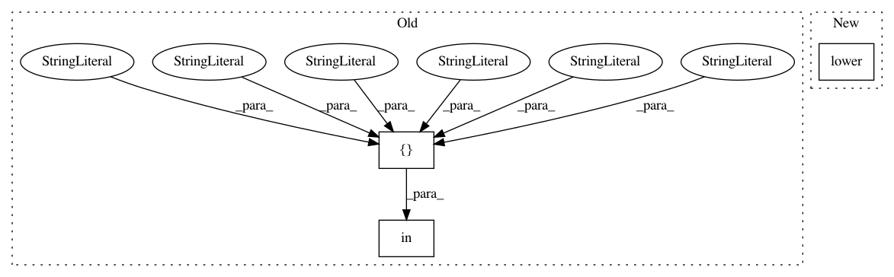

b963d528e3abd5084cbed4ee2d1ceaad245c42f4,ggplot/utils/palettes.py,,color_palette,#Any#Any#Any#,67
Before Change
seaborn_palettes = dict(
deep=["/ǚC72B0", "/ናA868", "//C44E52",
"/B2", "//CCB974", "/ኜB5CD"],
muted=["/CF", "/ǜACC65", "//D65F5F",
"//B47CC7", "//C4AD66", "/ኩBEDB"],
pastel=["/ኸC6FF", "/ኽF0AA", "//FF9F9A",
"//D0BBFF", "//FFFEA3", "//B0E0E6"],
bright=["/랛FFF", "/ED3A", "//E8000B",
"/ǞA2BE2", "//FFC400", "/ቜD7FF"],
dark=["/랙C7F", "/�", "/ǞC0900",
"/A1", "//B8860B", "/�"],
colorblind=["/B2", "/랡E73", "//D55E00",
"//CC79A7", "//F0E442", "/ኔB4E9"],
)
if name is None:
palette = mpl.rcParams["axes.color_cycle"]
elif not isinstance(name, string_types):
palette = name
elif name == "hls":
palette = hls_palette(n_colors)
elif name == "husl":
palette = husl_palette(n_colors)
elif name in seaborn_palettes:
palette = seaborn_palettes[name]
elif name in dir(mpl.cm):
palette = mpl_palette(name, n_colors)
After Change
palette = hls_palette(n_colors)
elif palette == "husl":
palette = husl_palette(n_colors)
elif palette.lower() == "jet":
raise ValueError("No.")
elif palette in SEABORN_PALETTES:
palette = SEABORN_PALETTES[palette]
In pattern: SUPERPATTERN
Frequency: 3
Non-data size: 3
Instances
Project Name: has2k1/plotnine
Commit Name: b963d528e3abd5084cbed4ee2d1ceaad245c42f4
Time: 2015-09-16
Author: has2k1@gmail.com
File Name: ggplot/utils/palettes.py
Class Name:
Method Name: color_palette
Project Name: scikit-multiflow/scikit-multiflow
Commit Name: dc10409f7f4aaf0f76fda4ce30d48164044dd265
Time: 2018-04-05
Author: jacob.montiel@gmail.com
File Name: src/skmultiflow/data/file_stream.py
Class Name: FileStream
Method Name: __init__
Project Name: thtrieu/darkflow
Commit Name: 4b36cc9e6285d39efba8319cbd687cd60d5eeecb
Time: 2017-12-04
Author: daniel.kermany@gmail.com
File Name: darkflow/net/yolo/misc.py
Class Name:
Method Name: is_inp